Demonstration of Algorithmic Terrain Generation
This script demonstrates how approximately realistic-looking terrain can be generated with some very simple algorithms. These algorithms are interesting in their simplicity and their strictly-geometrical interpretation. That is, no effort is made to model techtonic plates, erosion, rivers, etc., and yet these features appear to exist nonetheless in the generated terrain. These methods are part of a class known as fractional Brownian motion, fractal generation methods, and several other names and originated with Benoît Mandelbrot.
For instance, the following image was created with a very brief algorithm, and the same type of algorithm that generated the terrain geometry was used to control color variation across the terrain for rock, dirt, vegetation, etc.
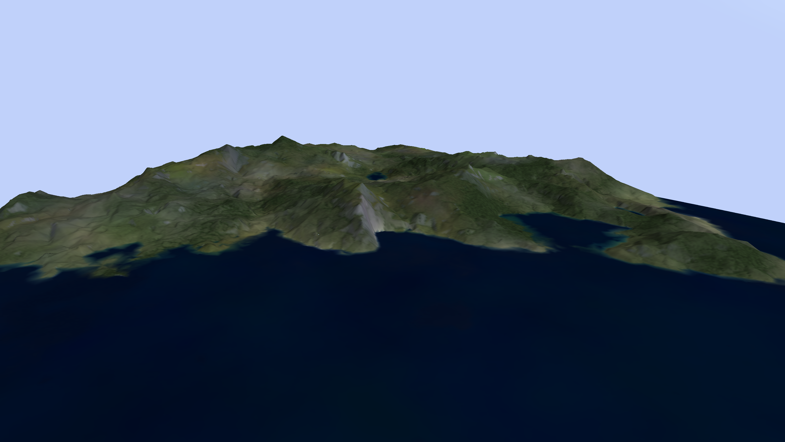
Tucker McClure Copyright 2012, The MathWorks, Inc.
Contents
Basic Terrain Generation
First, we'll show how a couple of these methods might be used. We'll then proceed to a discussion of approximately how they work. Finally, we'll wrap up with a few options for controlling the result.
% Create a landscape.
tic();
[x, y, h, hm, xm, ym] = generate_terrain(7, 513, 0, 0.1, 0.05);
toc();
Elapsed time is 1.130235 seconds.
Terrain Points
Plot the triangles represented by all the points. We'll add lighting too to make the detail easier to see.
figure(1); trisurf(delaunay(x, y), x, y, h); colormap jet; % Default color map. set(gca, 'Position', [0 0 1 1]); % Fill the figure window. axis equal vis3d; % Set aspect ratio. shading interp; % Interpolate color across faces. camlight left; % Add a light over to the left somewhere. lighting gouraud; % Use decent lighting.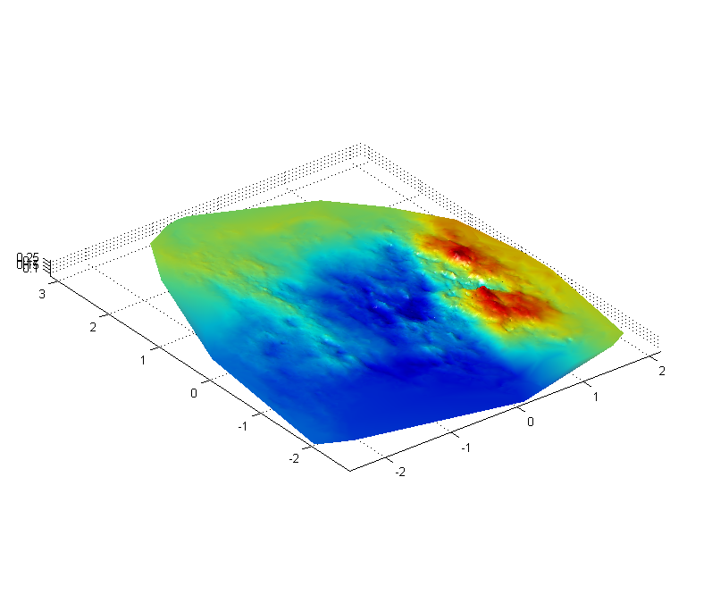
Meshed Terrain
Plot as a mesh. Note that this is zoomed in on the median off all of the generated points in order to capture the detailed middle instead of the relatively uneventful edges.
surf(xm, ym, hm); set(gca, 'Position', [0 0 1 1]); % Fill the figure window. axis equal vis3d; % Set aspect ratio. shading interp; % Interpolate color across faces. camlight left; % Add a light over to the left somewhere. lighting gouraud; % Use decent lighting.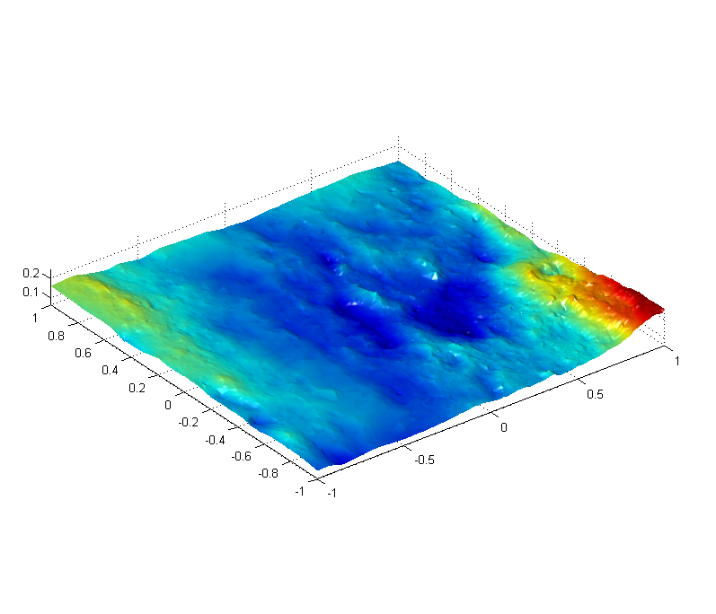
Realistic-Looking Terrain
We can add some natural-looking colors to this. Note that this process uses the same type of underlying algorithm to generate the variation in different colors. E.g., steep areas are likely to be colored as rock, but the variation in the degree to which they take on rock colors and the variation in the rock color itself across the map are both meshes generated by a similar means. That is, areas with a 1 or higher will definitely be colored as rock. Areas with 0 or lower definitely will not. Everything in between is a gradient of rockiness.
Note that this involves creating multiple meshes for grass, for trees, for rock, for dirt, and for water, so this function consists of numerous calls to generation methods and therefore takes substantially longer than to generate the terrain itself.
tic(); cm = generate_terrain_colors(hm); toc(); surf(xm, ym, max(hm, 0), cm); % Make figure (and flatten ocean). set(gca, 'Position', [0 0 1 1]); % Fill the figure window. axis equal vis3d off; % Set aspect ratio and turn off axis. shading interp; % Interpolate color across faces. material dull; % Mountains aren't shiny. camlight left; % Add a light over to the left somewhere. lighting gouraud; % Use decent lighting.
Elapsed time is 1.606919 seconds.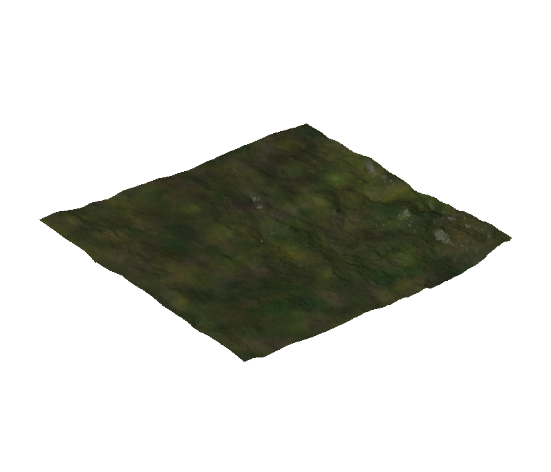
Other Uses
In addition to generating terrain, these methods can be used to generate other useful topologies. For instance, suppose one were simulating a city's ability to respond to an emergency. These tools could be used to generate a population density map for the city, such that what might be a "mountain" when viewed as terrain is instead a high population area. This population map could be used to generate random emergencies (such that high population areas have more emergencies), stressing the simulated capabilities of the emergency response teams. Other examples might include generation of the corrosion of a metallic surface or of 2D probability density distributions. Consider the following, in which the terrain is automatically generated and a population density map is similarly generated.
% Make the terrain. [~, ~, ~, hm, xm, ym] = generate_terrain(7, 513, 0.01, 0.02, 0.05); % Create our population density map. tic(); pm = generate_brownian_mesh(9, zeros(2, 2)); toc(); % We can't have negative population density or people living underwater. pm(pm < 0 | hm < 0) = 0; pm = pm.^3; clf(); surf(xm, ym, max(hm, 0), 1e3*pm); % Make figure (and flatten ocean). axis equal vis3d off; % Set aspect ratio and turn off axis. shading interp; % Interpolate color across faces. material dull; % Mountains aren't shiny. camlight left; % Add a light over to the left somewhere. lighting gouraud; % Use decent lighting. title(colorbar(), 'Population Density (inhabitants/km^2)');
Elapsed time is 0.043392 seconds.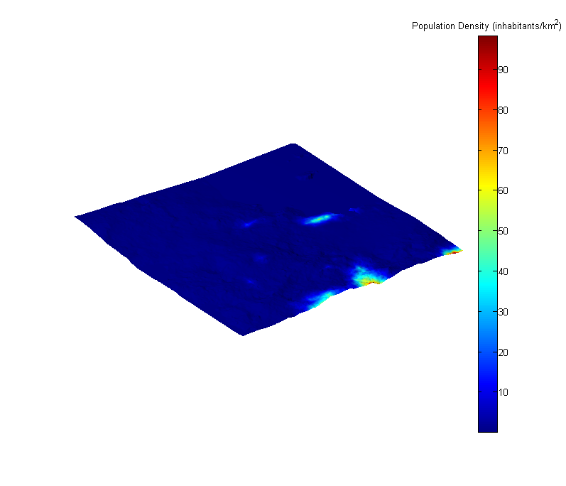
Notice that for terrain, we use generate_terrain, but for the population data, we use generate_brownian_mesh, which is faster, but slightly less terrain-like. Note also that care was taken to ensure the population map size was the same size as the terrain map. We requested a 513-by-513 mesh for the terrain, and the generate_brownian_mesh produces a mesh of size 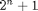 by , where 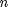 is the first argument. This is due to the way the mesh doubles from its initial condition every iteration.
We'll use the population map to generate random emergencies, which are more likely in high-population areas. These methods can be used to simulate realistic conditions for operations research or optimization problems.
hold on; cdf = cumsum(pm(:)) / sum(pm(:)); % Cumulative distribution of population for k = 1:1000 index = find(rand() < cdf, 1, 'first'); % Draw a random emergency. plot3(xm(index), ym(index), hm(index), 'k.'); % Show it. end hold off; title('Simulated Emergencies According to Population Density');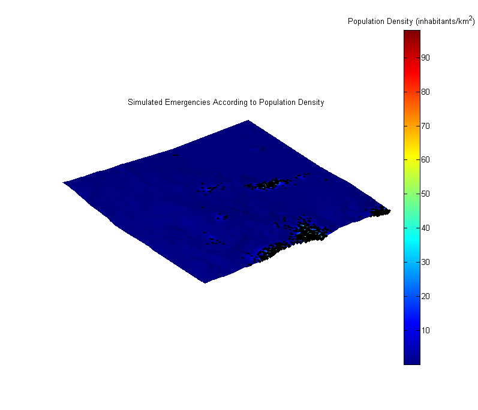
Here's corrosion on a metallic surface. This might be used to generate geometry for a finite element analysis engine to demonstrate various types of fracture/failure modes.
[xm, ym, zm] = generate_brownian_mesh(8, 0.0*ones(2, 2)); xm(xm < 0) = 0; xm = 0.02*xm; zm = 0.25*zm; clf(); h_corrosion = patch(surf2patch(xm, ym, zm, 0.75*ones([size(xm) 3]))); patch('Vertices', [xm(:, 1) ym(:, 1) zm(:, 1); ... 0.05 0 0.25; ... 0.05 0 0], ... 'Faces', 1:size(xm, 1)+2, ... 'FaceVertexCData', 0.75*ones([size(xm, 1)+2 3])); patch('Vertices', [xm(:, end) ym(:, end) zm(:, end); ... 0.05 1 0.25; ... 0.05 1 0], ... 'Faces', 1:size(xm, 1)+2, ... 'FaceVertexCData', 0.75*ones([size(xm, 1)+2 3])); patch('Vertices', [xm(1, :)' ym(1, :)' zm(1, :)'; ... 0.05 1 0; ... 0.05 0 0], ... 'Faces', 1:size(xm, 1)+2, ... 'FaceVertexCData', 0.75*ones([size(xm, 1)+2 3])); patch('Vertices', [xm(end, :)' ym(end, :)' zm(end, :)'; ... 0.05 1 0.25; ... 0.05 0 0.25], ... 'Faces', 1:size(xm, 1)+2, ... 'FaceVertexCData', 0.75*ones([size(xm, 1)+2 3])); patch('Vertices', [0.05 0 0; ... 0.05 1 0; ... 0.05 1 0.25; ... 0.05 0 0.25], ... 'Faces', 1:4, ... 'FaceVertexCData', 0.75*ones([4 3])); view(3); set(gca(), 'Projection', 'perspective'); axis equal vis3d; shading flat; material([0 1 1]); camlight left; lighting phong;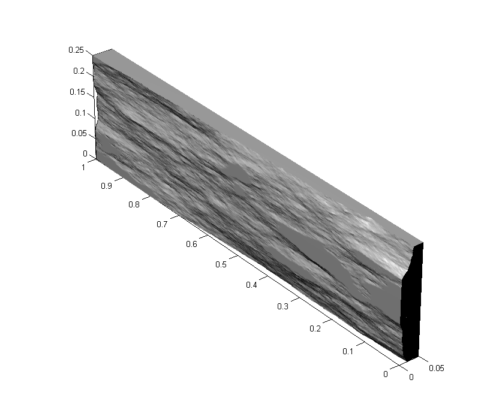
Additional Functions
Several algorithms are included:
- generate_brownian_mesh - Fastest, varies more along grid lines
- generate_brownian_tri - Slower, but gridless
- generate_terrain - Slowest, but best for terrain in particular
Several terrain-oriented tools are also included, mostly for fun:
- generate_scene - Creates and colors terrain
- generate_terrain_colors - Generate colors for a terrain map
- render_random_scenes - Produces and saves several terrain scenes
- sun_tones - Generates appropriate sky color for time
A general utility, FigureRotator, is included as well. This allows a user to rotate around a target point, move in and out, and zoom in and out. It's available separately on FileExchange. See help FigureRotator.
How It Works
The terrain generation is easy to understand. Let's start with a few random points somewhere near (0, 0). When we plot it, we'll add points around the edges to make a square.
x = 0.25 * randn(3, 1); y = 0.25 * randn(3, 1); h = 0.1*randn(3, 1); trisurf(delaunay([-1; -1; 1; 1; x], [-1; 1; -1; 1; y]), ... [-1; -1; 1; 1; x], [-1; 1; -1; 1; y], [0; 0; 0; 0; h]); axis equal vis3d; set(gca, 'Projection', 'perspective');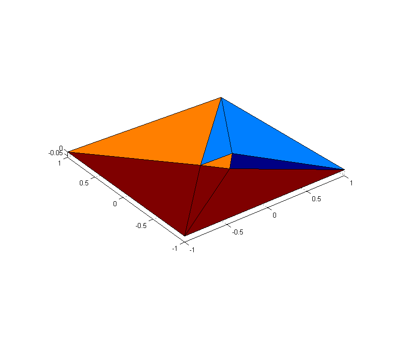
Draw New Locations
We'll pick three new locations per point and find what height those points are currently.
% Draw random parents for each new point. parents = randi(length(x), 1, 3*length(x)); % Pick parent points. % Draw new x, y points. Limit to [0, 1]. x_new = max(min(x(parents) + 0.5 * randn(3*length(x), 1), 1), -1); y_new = max(min(y(parents) + 0.5 * randn(3*length(x), 1), 1), -1); % Interpolate to find current height. We'll use an anonymous function here % for brevity and then use it again and again. If this looks unfamiliar, % search for "anonymous functions" in the documentation. interpolate = @(x, y, h, x_new, y_new) ... feval(@(int) int(x_new, y_new), ... TriScatteredInterp([-1; -1; 1; 1; x], ... [-1; 1; -1; 1; y], ... [0; 0; 0; 0; h])); h_new = interpolate(x, y, h, x_new, y_new); % Show the new points. hold on; plot3(x_new, y_new, h_new, 'r+'); hold off;
Vary Heights
Now we'll vary the heights of those locations.
h_new = h_new + 0.1 * randn(3*length(x), 1); x = [x; x_new]; y = [y; y_new]; h = [h; h_new]; % We'll use this plot process a lot, so we'll write an anonymouns function % for this too. Again, see the documentation for "anonymous function" if % this looks unfamiliar. plot_it = @(x, y, h) trisurf(delaunay([-1; -1; 1; 1; x], ... [-1; 1; -1; 1; y]), ... [-1; -1; 1; 1; x], ... [-1; 1; -1; 1; y], ... [0; 0; 0; 0; h]); plot_it(x, y, h); axis equal vis3d; set(gca, 'Projection', 'perspective'); % There may be a warning below about duplicate data points. That just means % we generated points outside of the [-1, 1] window and are ignoring them. % The real algorithm doesn't do this, but it's simpler to see the algorithm % without worrying about this detail for now. We'll turn off that % particular warning. warning_state = warning('query', 'MATLAB:delaunay:DupPtsDelaunayWarnId'); warning off MATLAB:delaunay:DupPtsDelaunayWarnId
Do It Again, Halving Variance
We'll pick new x and y points, interpolate the find the current heights, and vary those heights. Each random draw will be smaller than the last time through.
% Draw random parents for each new point. parents = randi(length(x), 1, 3*length(x)); % Pick parent points. % Draw new x, y points. Limit to [0, 1]. x_new = max(min(x(parents) + 0.75 * 0.5 * randn(3*length(x), 1), 1), -1); y_new = max(min(y(parents) + 0.75 * 0.5 * randn(3*length(x), 1), 1), -1); % Interpolate to find current height. h_new = interpolate(x, y, h, x_new, y_new); % Show the new points. hold on; plot3(x_new, y_new, h_new, 'r+'); hold off; snapnow(); % Vary the heights. h_new = h_new + 0.5 * 0.1 * randn(3*length(x), 1); x = [x; x_new]; y = [y; y_new]; h = [h; h_new]; % Show the new surface. plot_it(x, y, h); axis equal vis3d; set(gca, 'Projection', 'perspective');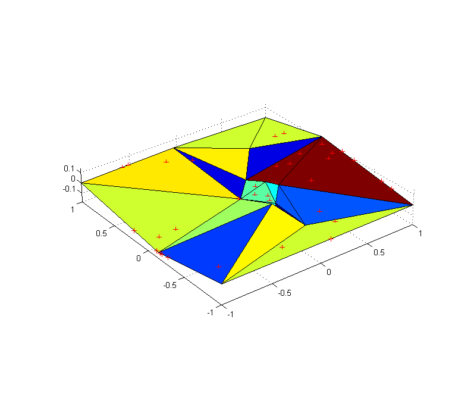 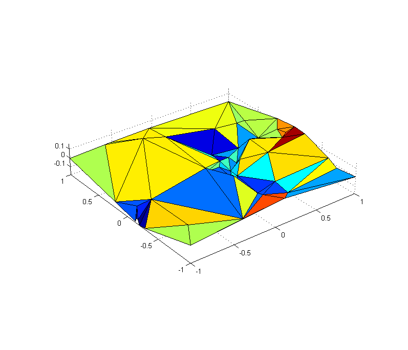
The process can continue for several iterations, adding finer and finer detail.
for k = 2:5 % Pick parent points. parents = randi(length(x), 1, 3*length(x)); % Draw new x, y points. Limit to [0, 1]. d = 0.75^k; x_new = max(min(x(parents) + d * 0.5 * randn(3*length(x), 1), 1), -1); y_new = max(min(y(parents) + d * 0.5 * randn(3*length(x), 1), 1), -1); % Interpolate to find current height. h_new = interpolate(x, y, h, x_new, y_new); hold on; plot3(x_new, y_new, h_new, 'r+'); hold off; snapnow(); % Vary the heights by half as much as last time. h_new = h_new + 0.5^k * 0.1 * randn(3*length(x), 1); x = [x; x_new]; %#ok<AGROW> y = [y; y_new]; %#ok<AGROW> h = [h; h_new]; %#ok<AGROW> plot_it(x, y, h); axis equal vis3d; set(gca, 'Projection', 'perspective'); snapnow(); end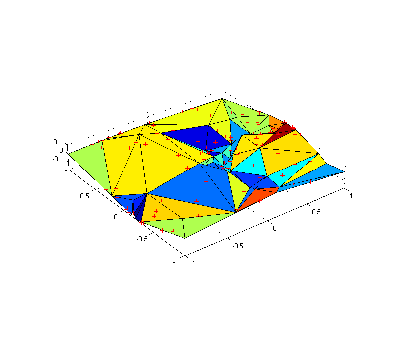 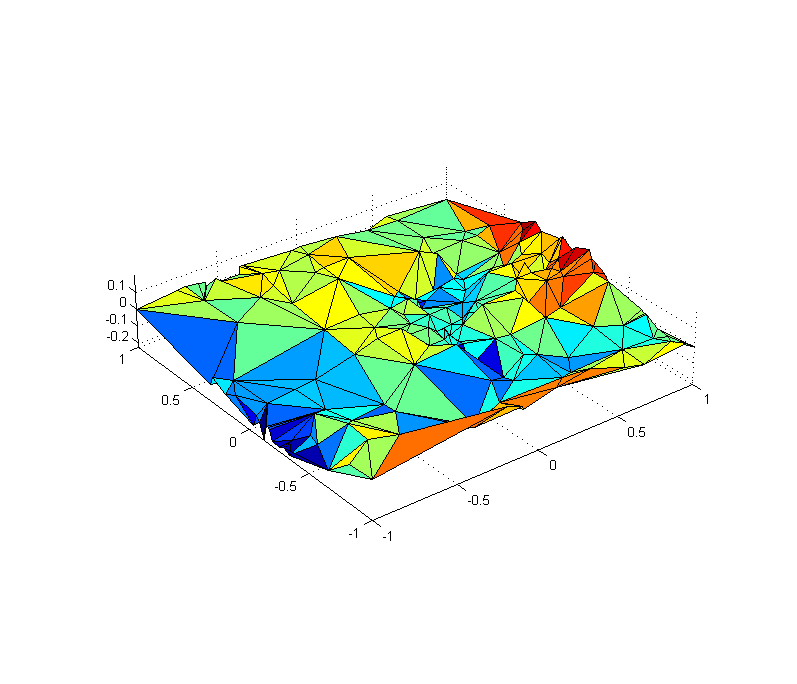 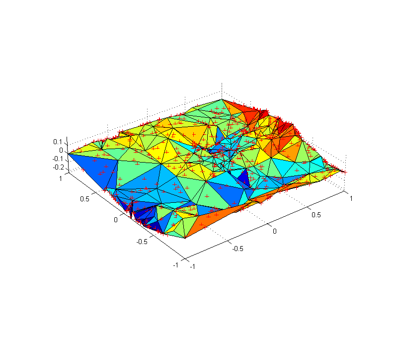 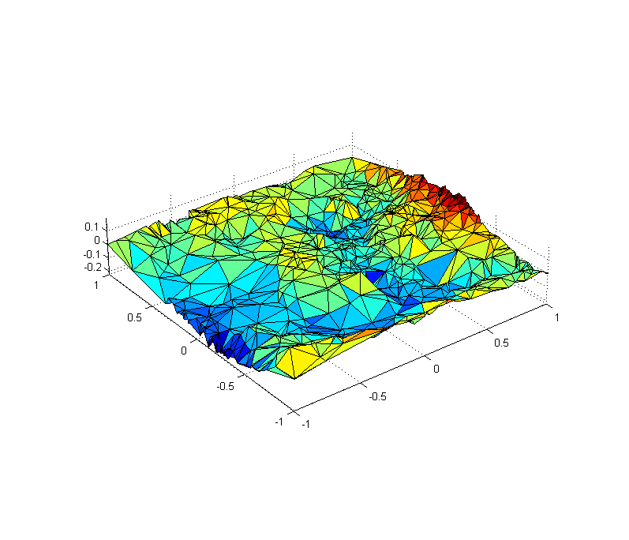
Warning: Duplicate data points have been detected and removed - corresponding values have been averaged. (Type "warning off MATLAB:TriScatteredInterp:DupPtsAvValuesWarnId" to suppress this warning.)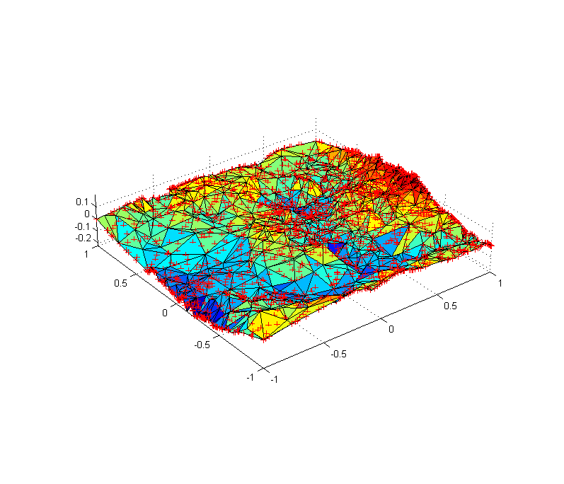 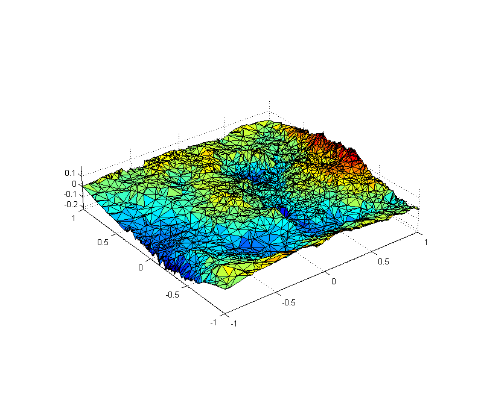
Warning: Duplicate data points have been detected and removed - corresponding values have been averaged. (Type "warning off MATLAB:TriScatteredInterp:DupPtsAvValuesWarnId" to suppress this warning.)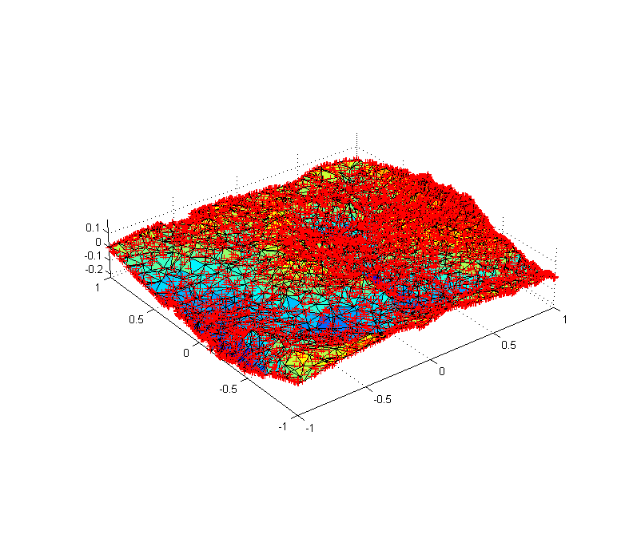 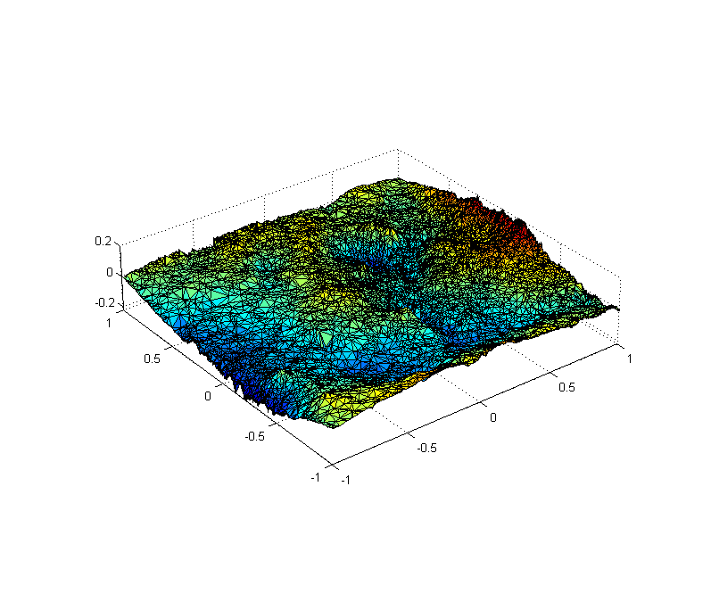
Finally, Add Appropriate Color
% Chop off anything below 0 (we can interpret this as sea level). h(h < 0) = 0; plot_it(x, y, h); axis equal vis3d; set(gca, 'Projection', 'perspective'); % We can use the colormap from the "cape" example that ships with MATLAB. colormap(getfield(load('cape', 'map'), 'map')); %#ok<GFLD> shading interp; material dull; camlight left; lighting gouraud;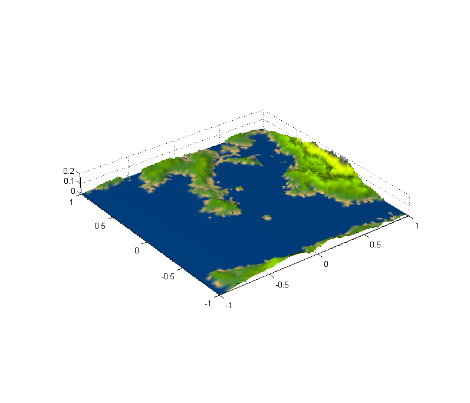
Now we have a landscape.
A few details were omitted here for simplicity. For instance, the real algorithm doesn't clamp the corners to all be at 0 height. Also, points are free to sprawl across space and aren't limited to [-1, 1] like they are here. This is why results from the functions will look a little different than what we've pieced together in this explanation. The fundamentals of the algorithm, however, are represented.
% Return the state of the warning about duplicates. warning(warning_state.state, 'MATLAB:delaunay:DupPtsDelaunayWarnId');
Final Comments
We looked at a few applications of these procedural generation methods to create realistic terrain, population data with random events, and corrosion, and we further discussed what's behind these methods. For more information, see "Fractal landscape", "Brownian surface", or "Procedural generation" on Wikipedia or browse the wealth of resources produced by Benoît Mandelbrot on fractals and roughness. Going beyond the three included algorithms, it's easy to create a new or customized algorithm for a given purpose. Lateral thinking in this field is highly encouraged!
Here are three final scenes, showing a few types of behaviour that can result from these algorithms.
for k = 1:3 tic(); example_scene; toc(); snapnow(); end
Elapsed time is 4.811143 seconds.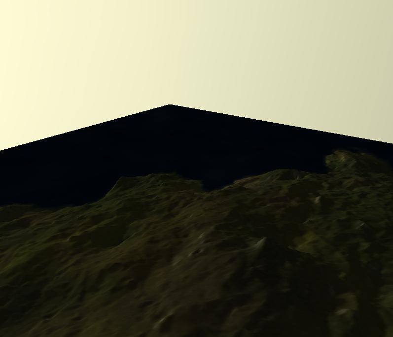
Elapsed time is 3.878252 seconds.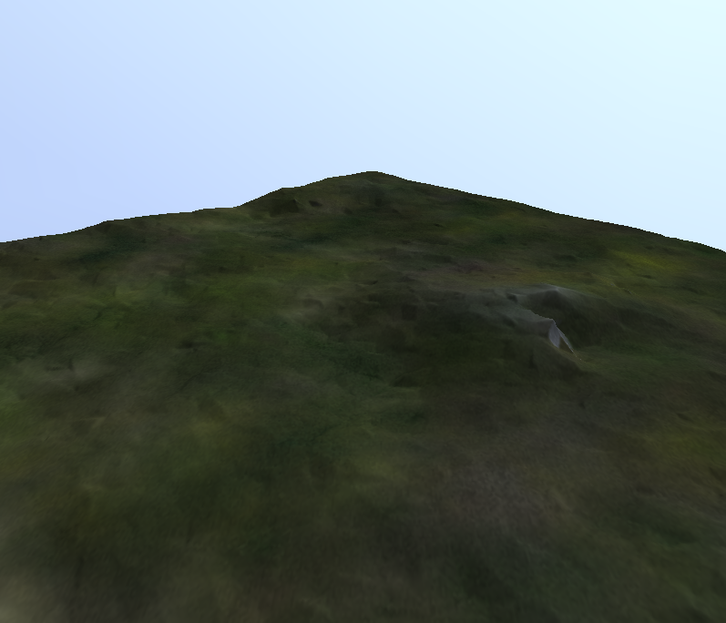
Elapsed time is 4.845763 seconds.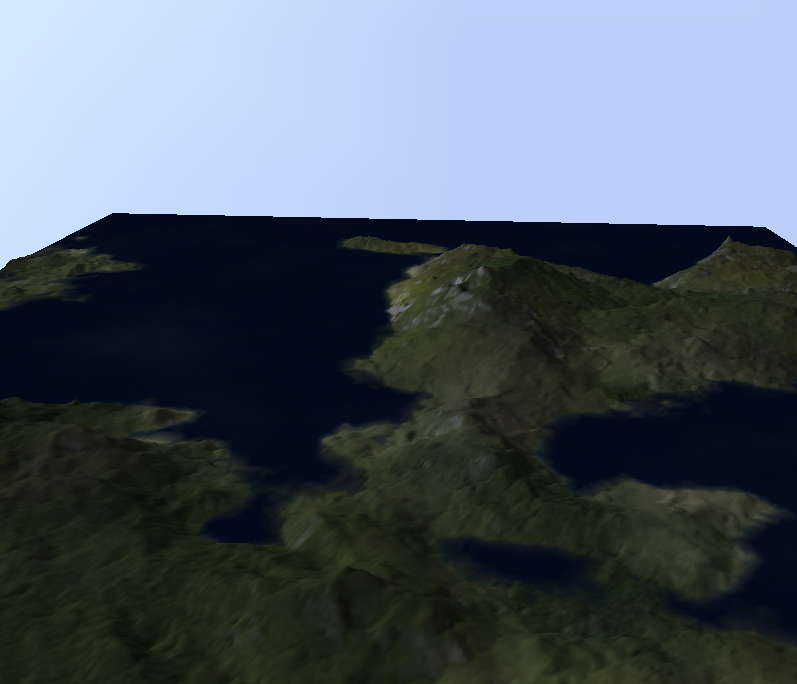
Thanks for downloading.
- Tucker McClure